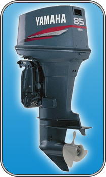

Yamaha 85 AETL

| Технические характеристики | |
|---|---|
| Тип двигателя | 2-х тактный |
| Рабочий объем, см³ | 1140 |
| Число цилиндров/конфигурация | 3 |
| Диаметр цилиндра x ход поршня, мм | 82,0 x 72,0 |
| Мощность на валу винта в среднем диапазоне оборотов | 66,2 кВт/5000 об/мин |
| Диапазон работы при полном газе, об/мин | 4500 - 5500 |
| Система смазки | Премикс |
| Топливная система | 3 карбюратора |
| Зажигание/доп.система | Конденсаторная система зажигания CDI |
| Запуск | Электрический |
| Передаточное соотношение | 2,0 (26/13) |
| Рекомедуемая высота транца судна, мм | L: 521 X: 647 |
| Масса с винтом, кг | L: 119 X: 122 |
| Топливный бак | Отдельный, 24л |
| Рулевое управление | Дистанционное управление |
| Управление подачей топлива и переключением передач | Дистанционное управление |
| Способ изменения дифферента и наклона | Электропривод |
| Катушка зажигания/генератор | 12В - 6А |